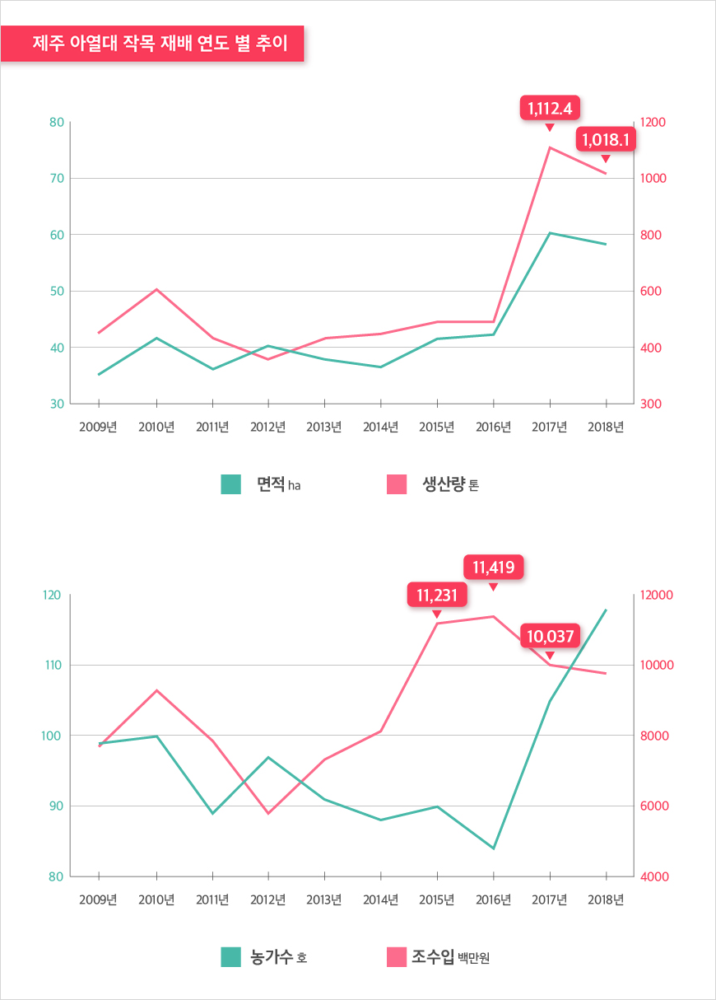

기획취재콘텐츠
- Home
- 제주라이프
- 기획취재콘텐츠
미래 먹거리를 선도하는 제주 열대 및 아열대 작물 산업새로운 글


제주 햇살을 머금고 잘 익은 올리브가 노지에 있는 올리브 나무에 매달려있다. 2미터가 넘는 바나나 나무에는 바나나가 주렁주렁 열려 있고 사과처럼 붉은 빛을 띈 애플 망고와 조롱박을 닮은 파파야가 수확을 기다린다. 동남아시아나 지중해 농장의 풍경처럼 보이지만, 올리브와 바나나, 애플망고와 파파야는 지금 제주에서 활발하게 재배 중인 아열대 작물이다.
- 제주의 아열대과일 농장 ‘유진팡’ 파파야와 바나나 등 다양한
아열대 작물이 자라고 있다. ⓒ윤소진 -
아열대 작물이 자라고 있다. ⓒ윤소진 -
기후변화로 변화하는 농작물 지도
기후변화에 관한 정부간 협의체(IPCC) 5차 평가 보고서에 따르면 제주도 연평균 기온은 지난 80년 간 약 1.6℃ 정도 상승하며 점차 그 폭이 커지고 있다. 농촌진흥청은 2060년 아열대 기후 지역이 우리나라 경지 면적의 26.6%, 2080년 62.3%로 늘어나 한반도 대부분이 아열대 기후권에 속할 것이라고 전망했다. 제주는 이미 아열대 북쪽 한계선으로 분류되어 있다. 급속한 온난화로 배추, 무 등 월동작물은 재배지가 북상하고 그 자리를 아열대 작물이 대체할 것으로 보인다. 제주 대표 작물인 귤 생산지는 본토 남부지방에서 시작해 2019년에는 경기도까지 북상했다. 제주는 망고, 바나나, 파파야 등 대표 열대 및 아열대 작물의 원산지로 그 입지를 확대하고 있다. 온대성 기후에서 아열대 기후로의 변화는 대한민국의 농산물 지도를 다시 그리고 있다.
대한민국 아열대 작목 재배 현황(2020년 2월)
-
아열대 작목 재배 농가 수 전체 1,673호
- 아열대 채소 1,145호
- 아열대 괴수 528호
-
아열대 작목 재배 면적 전체 406.6 핵타르(ha)
- 아열대 채소 164 핵타르(ha)
- 아열대 괴수 242.6 핵타르(ha)
-
아열대 작목 생산량 전체 6,343.8톤
- 아열대 채소 3,466톤
- 아열대 괴수 2,878톤

※ 출처 : 농촌진흥청 아열대 작목 재배 현황 (2020.02)
2020년 2월 기준 우리나라 전체 아열대 작목 재배 농가는 1,673호이며 재배 면적은 406.6 헥타르(ha), 생산량은 6,343.8톤이다. 아열대 채소 재배 농가는 1,145호, 재배면적은 242.6 헥타르(ha), 생산량은 3466톤이며 아열대 과수 재배 농가는 528호, 재배면적은 164 헥타르(ha), 생산량은 2,878톤이다. 아열대 채소 재배 면적은 여주, 강황, 삼채 순이며 과수는 망고, 백향과(패션프루트), 바나나 순이다. 아열대 작목 가운데 망고, 파파야, 용과, 올리브 재배 면적은 최근 3년 간 꾸준히 증가하고 있다.
제주는 2020년 2월 기준 156개 농가에서 63.6 헥타르(ha)에 아열대 과수를 재배해, 전체 생산량의 20% 이상인 1,296.7톤을 생산했다. 2019년 1월과 비교했을 때, 전국 아열대 작물 재배 농가 호수는 1.76% 증가한 것에 비해 제주는 107개 농가에서 156개 농가로 45% 이상 증가했으며, 재배 면적 또한 45.2 헥타르(ha)에서 63.6 헥타르(ha)로 40% 이상 증가했다. 전국의 열대 및 아열대 작물 재배 농가 및 면적에서 제주의 증가세가 뚜렷하게 나타난 것으로 보인다.

※ 출처 : 농촌진흥청 아열대 작목 재배 현황 (2020.02, 2019.01)
제주의 대표 열대 및 아열대 작물
제주는 2008년부터 열대 및 아열대 작물인 망고를 주축으로 용과·구아바·아떼모야·아보카도·패션후르츠 등 과수류 재배를 시작했다. 또한, 아스파라거스·브로콜리·콜라비· 아티초크·비트· 방울다다기양배추· 쓴오이 등 아열대 채소의 적응성 검토 및 재배기술개발을 실행했으며, 일부 작물은 지금까지도 계속 재배 중이다. 2014년에는 올리브 노지 재배에 성공해 농가 보급을 시작했다. 앞서 경험한 열대 및 아열대 작물 재배 노하우를 바탕으로 제주산 애플 망고와 바나나는 제주산 브랜드를 구축하며 시장에서 좋은 성과를 올리고 있다.
2018년 한해 동안 제주의 118개 농가는 재배면적 58ha에서 총 1018톤의 아열대 작물을 생산했으며, 97억 8800만 원의 조수입을 올렸다. 10년 전인 2009년에 비해 재배면적이나 농가 호수가 늘어나지 않았지만, 생산량과 조수입은 확실한 성장을 보여준다. 열대 및 아열대 작물 재배 실험 단계에서 재배기술 발전 및 농가 재배 역량을 확대하며 산업의 영역으로 안정적으로 안착하고 있다. 현재 제주에서는 주로 바나나, 패션프루트를 주 품목으로 다품종 소량 생산 형태로 아열대 과수 재배가 이루어지고 있다. 구체적인 통계로 집계되지 않지만, 여주와 강황, 오크라, 삼채, 고수, 공심채 등 아열대 채소도 제주 곳곳에서 재배 중이다.


2018년 기준 아열대 과수로는 애플망고가 재배 면적과 생산량, 조수입 모두 가장 높은 성과를 올렸다. 대표적인 열대 과일, 망고는 부드러운 과육에 달콤한 맛으로 전세계인의 입맛을 사로 잡는다. 제주에서 재배되는 망고는 붉은 빛의 애플망고로 향이 진하고 과육이 부드럽다. 망고는 완숙형 과일로 수확 후 상품 유지기간이 10일 정도로 짧다. 수입산 망고는 실제 완숙해서 유통 단계를 거치면 상품성이 떨어져 미숙할 때 수확해 고온 훈증이나 약재 처리 후 국내에 유통되기 때문에 국내에서 완숙과로 수확된 망고에 비해 맛이나 향에서 차이가 날 수밖에 없다. 제주 농업기술원 고승찬 연구원에 따르면 품질 조사에서도 수입산은 12브릭스 이하로 당도가 낮은 것에 비해 제주산 애플망고는 당도가 15브릭스 이상으로 향과 맛이 진하다. 특히 망고는 고소득 작물로 하우스 감귤보다 소득이 1.5배 높아 산업 경쟁력도 충분하다. 망고는 높은 당도와 부드러운 과육으로 화채나 빙수, 요거트 등 디저트에 많이 활용된다. 제주 신라 호텔은 2008년부터 지금까지 매 여름 시그니처 메뉴로 제주산 애플망고 빙수를 선보이고 있는데, 5만 원이 넘는 가격에도 신선한 제주산 애플망고로 만든 고급스러운 맛과 향에 매료되어 그 수요가 늘고 있다.
- 일러스트 : 렐리시 -
제주농업기술원 아열대 과수 조사에 포함되지 않지만, 아열대 작목에 해당하는 참다래(키위)는 제주에서 재배되는 아열대 작물 중에서도 가장 많은 생산량을 차지한다. 2018년 기타 과수 조수입 현황 자료에 따르면 총 521개 농가가 총 8천 3백여 톤을 생산해 약 300억의 조수입을 올렸다. 토산종인 참다래부터 골드키위, 레드키위 등 품종 개발에 따라 다양한 키위가 제주에서 생산되며 2017년에는 홍콩, 말레이시아, 싱가포르, 일본 4개국에 80톤, 2018년에는 전년 대비 2배 증가한 160톤이 수출되며 효자 수출 품목으로 손꼽히고 있다. 뉴질랜드 키위 생산 농가가 모여 출범한 프리미엄 키위 브랜드 ‘제스프리’는 2004년 서귀포시와 생산 협약을 체결해 2007년 1월 제주 골드키위를 첫 유통한 이후 상생협력을 이어오고 있다. 2015년 농촌진흥청에서는 한국형 키위 품종인 ‘제시골드’, ‘한라골드’ 등 토종 품종을 개발해 재배 농가에 보급하여 외국 종자라 외국에 로열티를 지급하던 방식에서 탈피하는 것과 동시에 농가 생산성을 높이기 위해 노력하고 있다.
바나나는 제주에서 1980년대부터 재배했지만, 수입자유화로 경쟁력이 떨어져 사라졌다가 2016년 이후 다시 재배농가가 증가한 작목이다. 바나나 농가 수는 2016년 3호, 2017년 17호, 2018년 28호로 점차 증가했다. 조수입 또한 2016년 1억 7천 1백만 원에서 2018년 23억 4천 5백만 원으로 13배 이상 증가했다. 국내산 바나나는 수입 바나나에 비해 값이 높지만, 안전한 국내 먹거리를 선호하는 소비자에게 큰 인기를 얻으며 기대 작목으로 부상하고 있다.
- 일러스트 : 렐리시 -
‘쓴 오이’라 불리는 넝쿨성 채소인 여주는 풍부한 비타민C와 미네랄을 함유하며 당뇨와 비만 예방, 고혈압 개선 등에 효과가 있어 건강 기능성 작물로 인기다. 전국적으로 여주 재배 면적은 107.92ha로 국내 재배되는 아열대 작물 중 가장 넓다. 여주는 건강 기능성 식품과 아시안 푸드에 다양하게 쓰이는 재료로 활용도가 높아 6차 산업과 연계한 소득 작물로 기대감이 증가 하고 있다.
제주는 아열대 작물 산업화의 최적지
이처럼 우리나라 최남단에 있는 제주는 기후변화 위기에 발빠르게 대응하며 아열대 작물 품종 개발 및 생산, 대중화에 앞장서고 있다. 제주는 아열대 작물 산지로 최적의 조건을 갖췄다. 대한민국 최남단 지역으로 평균 기온이 높아 아열대 작물 재배 시 가온재배 비용이 타지역에 비해 낮은 편이며, 일부 작물은 무가온 재배도 가능하다. 또한, 천혜의 자연 환경이 주는 브랜드 가치와 다양한 생물종을 바탕으로 화장품 원료 및 기능성 식품 산업 등 바이오 산업의 메카로 떠오르고 있는 산업적 배경은 아열대 작물 산업화에 이점으로 작용한다.
제주 오라동에 있는 농촌진흥청 온난화대응연구소는 국립원예특작과학원 소속 기관으로 2008년 온난화온난화대응농업연구센터에서 시작해 2015년 온난화대응농업연구소로 개편하고 제주특별자치도 농업기술원과 함께 꾸준히 열대 및 아열대 작물 품종, 재배기술 연구, 실증 및 보급 등 기후변화에 대응하며 작물 경쟁력을 확보하기 위해 다양한 노력을 기울이고 있다.
농촌진흥청은 미래 먹거리를 개발하는 차원에서 2008년부터 아열대 작물 연구를 시작해 총 50종의 아열대 작물을 국내로 도입했다. 2017년에는 오크라, 삼채, 여주, 강황 등 아열대 채소 12종과 망고, 패션프루트, 파파야 등 아열대 과수 8종을 선발해 집중 육성하고 있다. 여기에 농가 생산성 증대를 위해 아열대 작목 재배 기술을 연구 개발해 농가에 보급하고 있다. 혈당치를 낮추는 성분이 함유된 여주는 무가온 시설재배기술로 재배 수량을 24% 늘렸으며, 롱빈은 노지재배 정식기를 밝혀내 재배 수량을 33% 증가시켰다. 아열대 채소인 아티초크는 우리나라 환경에 맞는 품종을 선발하고 수량을 27% 높일 수 있는 재배 기술을 개발했으며, 패션프루트는 묘목 번식기술을 개발해 묘목 값을 10a당 240만 원까지 줄였다.
열대 및 아열대 작물 재배 기술 개발과 함께 농업 기반 조성에도 힘쓰고 있다. 제주시는 FTA 등 농산물시장 개방 확대에 대응해 밭작물 경쟁력을 강화하고자 2013년부터 2019년까지 161억원을 투자해 ‘정예 소득작목단지 조성사업’을 추진하고 집중 육성 중이다. 2020년에는 38억 3300만원(도비 23억원, 자기부담금 15억 3300만원)을 신규 정예소득작목단지 조성에 투자한다. 지원 대상 품목은 열대, 아열대 채소류, 화훼류, 특용작물 등 밭작물과 아열대 과수 등이다. 하우스 재배가 불가피해 초기 투자 비용이 높은 열대 및 아열대 작물의 재배를 활성화하고 소득 작목으로 자리잡아 농가 소득으로 창출될 수 있는 구조를 마련하고 있다.
아열대 작물 산업, 6차 산업화 가능할까?
6차 산업화는 1차 산업인 농업의 산업 경쟁력 확보에 필수불가결하다. 국내 재배를 시작한 지 얼마 되지 않은 열대 및 아열대 작물은 현재 품종 개량과 채산성 증대 등 1차 산업 안정화에 집중하며 동시에 6차 산업화 가능성을 타진하는 다양한 실험을 하고 있다.
제주시 한경면 낙천리에 있는 아홉굿 마을에는 노지에 올리브나무를 식재했는데, 다행히 토양과 기후가 잘 맞아 재배에 성공했다. 아홉굿 마을의 피자 만들기 체험에는 이렇게 제주도 노지에서 재배한 올리브가 올라간다. 체험에서 충분히 제주 올리브의 수요를 확인하고 올리브유를 개발해 유통할 계획이다. 제주 커피 농가에서는 커피는 물론 커피 와인을 생산해 부가가치를 높이고 있다.
제주농업기술원 농산물가공창업 교육에서는 작물을 활용해 잼, 식초, 와인 등 가공식품을 개발하고 판매할 수 있도록 다양한 교육 프로그램을 운영한다. 바나나와 파파야 등 다양한 열대 및 아열대 작물을 재배하는 대표 농가 ‘유진팜’은 이러한 교육 프로그램을 이수하고 바나나와 파인애플 등 열대과수를 활용한 식품을 개발해 판매하고 체험 프로그램을 운영하고 있다.
소비 촉진과 브랜드 구축이 앞으로의 숙제
제주농업기술원 고승찬 연구원은 “국내산 아열대 작물 소득 증대를 위해서는 수입산 작물과 차별화 된 브랜드 및 고급화 전략이 필요합니다.”라며 브랜드화의 중요성을 강조했다. 키위, 망고, 바나나는 고급화 전략을 바탕으로 제주산 브랜드 인지도 제고에 성공적으로 안착한 대표적 열대 및 아열대 작물이다. 제주산 바나나는 수입산 바나나에 비해 2배 가량 높은 가격에 판매되지만, 친환경 재배 방식으로 건강한 과일이라는 브랜드 이미지를 구축하며 판매량이 꾸준히 유지되고 있다. 제주산 애플망고는 외국산 망고에 비해 높은 당도와 품질로 비싼 가격에도 오히려 명품 과일 브랜드 이미지를 구축하며 백화점을 중심으로 활발하게 판매 된다.
아열대 과수와 함께 아열대 채소의 판매 활성화를 위해 농촌진흥청 온난화대응농업연구소 김성철 연구관은 아열대 채소 및 과수를 활용한 음식의 대중화가 필요하다고 말한다.
과일은 생과로 소비하지만, 아열대 채소는 2차 가공 후 섭취합니다. 아열대 채소는 우리나라 사람에게 다소 낯선 맛입니다. 아열대 채소의 맛을 친근하게 전달하기 위해 배추, 양파, 고추 등 국내 전통 밭작물과 혼합해 우리식 아열대 채소 퓨전 요리로 개발하고 있습니다.
- 농촌진흥청 온난화대응농업연구소 김성철 연구관
- (좌)차요태잎국 ⓒ농촌진흥청, 온난화대응농업연구소,
(우)인디언시금치 옥수수튀김 ⓒ농촌진흥청, 온난화대응농업연구소 -
(우)인디언시금치 옥수수튀김 ⓒ농촌진흥청, 온난화대응농업연구소 -
지난 2016년 온난화대응농업연구소에서 국내에서 재배 중인 열대 및 아열대 작물을 알리고 소비 확대를 위해 ‘아열대 채소 활용 한식 요리 시연회’를 개최했다. 시연회에는 경기대학교 외식조리학과 김명희 교수팀과 전문 셰프들이 제주에서 재배 중인 여주, 공심채 등 아열대 채소 15종을 이용해 개발한 김치(깍두기), 볶음, 샐러드, 디저트 등 24개 요리를 소개했다. 요리 시연 후에는 직접 가정에서 아열대 채소를 기를 수 있도록 ‘인디언 시금치’ 모종 나누기와 ‘아열대 작물 활용 레시피’ 책자를 전달했다.
다문화 가정 증가, 동남아 음식에 친숙한 젊은 층의 입맛 변화로 점차 아열대 작물의 수요가 늘고 있습니다. 고수도 처음에는 강한 향 때문에 먹지 않는 사람이 많았지만, 지금은 오히려 집에서 재배할 정도로 인기 채소가 되었죠. 서울은 물론이고 제주도에도 열대 및 아열대 작물을 취급하는 동남아 식당이 늘고 있습니다. 안정적인 재배기술과 브랜드 구축으로 제주산 열대 및 아열대 작물의 인기는 더욱 높아질 것으로 예측합니다.
- 농촌진흥청 온난화대응농업연구소
지난 3월, 제주특별자치도 농업기술원은 2020년부터 2021년까지 2년 간 노지재배 가능한 용도별 올리브 품종을 선발해 새소득원으로서의 가능성을 검토한다고 밝혔다. 또한, ‘아열대과수 용안, 스타애플 등 제주 재배 지역 가능성도 조기에 구명하고 있다’고 전하며 재배 가능성 검토가 끝난 리치 등에 대해서는 올해 재배 기술 책자를 발간해 농가해 보급할 예정이라고 전했다. 이뿐만 아니다 제주시 오라동에 있는 온난화대응농업연구소의 재배 온실에서는 커피, 올리브, 망고, 강황, 열대 시금치 등 다양한 열대 및 아열대 작물의 재배 환경을 실험하고 제주 환경에 적합한 품종 연구가 진행 되고 있다.
제주산 올리브를 올린 피자, 제주산 그린 파파야로 만든 샐러드와 공심채 볶음이 한국인의 밥상에 오를 날도 머지 않았다. 기후 변화에 대응한 열대 및 아열대 작물 품종 연구와 선별, 농업기술의 고도화 그리고 제주 청정 농산물 브랜드의 상생으로 제주는 열대 및 아열대 작물로 새로운 특산물 지도를 그리고 있다.
이전글
다음글